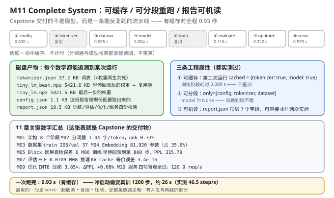
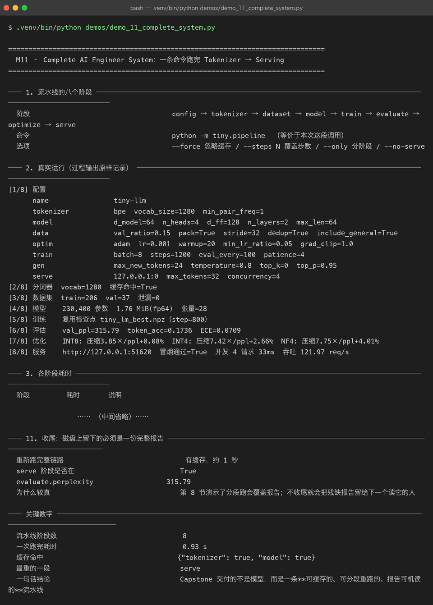

Milestone 11 — Complete AI Engineer System：一条命令跑完 Tokenizer → Serving
前面 10 章各自证明了一件事。这一章把它们串成一条流水线，并且交付一个 Capstone 级别的结论：
Capstone 交付的不是模型，而是一条「可缓存的、可分段重跑的、报告可机读的」流水线。
这句话不是口号——它对应三条实测过的工程属性。一个只会"从头跑一遍"的脚本，改一行评估代码就要重训 26 秒，实验迭代直接瘫痪。
1. Why：为什么"能跑通"远远不够
把 10 个模块串起来，最朴素的写法是一段顺序脚本：import → build → train → eval → serve。它"能跑通"，但一旦进入真实迭代就会暴露三个致命问题：
- 每次改动都要重训。 改一行评估逻辑、调一个服务的日志格式，都得从最贵的训练阶段重来。实验迭代的成本会被最慢的一步锁死。
- 没法只跑一段。 排查"服务为什么返回 500"，你不想重跑 tokenizer 和训练。
- 报告只是文本。 两次实验的
report.json是两坨 log，没法 diff、没法进 CI。你甚至没法回答"这次超参变化到底带来了多少收益"。
所以本章的验收标准不是"跑通了"，而是这三条属性逐条被证明。
2. Design：八段流水线 + 三层产物
config → tokenizer → dataset → model → train → evaluate → optimize → serve
│ │ │ │ │ │ │ │
└── config.json tokenizer.json tiny_lm_best.npz report.json八段各自的产物和缓存策略：
| 阶段 | 产物 | 缓存判据 |
|---|---|---|
| config | config.json | — |
| tokenizer | tokenizer.json | 文件存在即复用 |
| dataset | 内存中 | — |
| model | 内存中 | — |
| train | tiny_lm_best.npz | 检查点存在即复用 |
| evaluate | 写入 report.json | — |
| optimize | 写入 report.json | — |
| serve | 起服务 + 冒烟 + 压测 | — |
复用的优先级是"最优检查点 > 最后一步检查点"（tiny_lm_best.npz 优先于 tiny_lm.npz）。这不是"哪个新用哪个"，而是：早停回滚后的权重才是该上线的那个（M06/M07 都证明了它逐条优于训练终点）。如果流水线图省事直接用"最后一步"，M11 的 PPL 就会变成 338.13，和 M06/M07 报告的 315.79 对不上——跨章节的证据链就断了。
三个 CLI 选项：
--force 忽略缓存，强制重算
--steps N 覆盖训练步数
--only 只跑指定阶段（如 --only config,tokenizer,dataset）
--no-serve 跳过服务阶段（CI 里没有网络时用）
3. Real-run evidence（来自 demos/out/demo_11_complete_system_terminal.txt）

3.1 真实运行（过程输出原样记录）
[1/8] 配置
name tiny-llm
tokenizer bpe vocab_size=1280 min_pair_freq=1
model d_model=64 n_heads=4 d_ff=128 n_layers=2 max_len=64
data val_ratio=0.15 pack=True stride=32 dedup=True include_general=True
optim adam lr=0.001 warmup=20 min_lr_ratio=0.05 grad_clip=1.0
train batch=8 steps=1200 eval_every=100 patience=4
gen max_new_tokens=24 temperature=0.8 top_k=0 top_p=0.95
serve 127.0.0.1:0 max_tokens=32 concurrency=4
[2/8] 分词器 vocab=1280 缓存命中=True
[3/8] 数据集 train=206 val=37 泄漏=0
[4/8] 模型 230,400 参数 1.76 MiB(fp64) 张量=28
[5/8] 训练 复用检查点 tiny_lm_best.npz（step=800）
[6/8] 评估 val_ppl=315.79 token_acc=0.1736 ECE=0.0709
[7/8] 优化 INT8: 压缩3.85×/ppl+0.08% INT4: 压缩7.42×/ppl+2.66% NF4: 压缩7.75×/ppl+4.01%
[8/8] 服务 http://127.0.0.1:51620 冒烟通过=True 并发 4 请求 33ms 吞吐 121.97 req/s这一段的每一行都能和前面某一章对上，这就是流水线的价值：所有数字是从同一个配置、同一份权重、同一条路径里出来的，不是十份互不相干的实验数据拼起来的。
[2/8]的vocab=1280↔ M02；[3/8]的train=206 val=37 泄漏=0↔ M03；[4/8]的230,400 参数 / 28 张量↔ M04/M05；[5/8]的tiny_lm_best.npz（step=800）↔ M06（注意是 best，不是 last）；[6/8]的val_ppl=315.79↔ M07；[7/8]的三档压缩比 ↔ M09；[8/8]的冒烟通过=True↔ M10。
3.2 各阶段耗时
阶段 耗时 说明
config 0.000 s
tokenizer - 复用缓存，未计时
dataset 0.006 s
model 0.004 s
train - 复用缓存，未计时
evaluate 0.115 s
optimize 0.225 s
serve 0.579 s
合计 0.928 s
缓存命中 {"tokenizer": true, "model": true}有缓存时全程 0.928 秒。 对比：冷启动需要真训 1200 步，约 26 s（46.5 step/s）。28 倍的差距，就是"可缓存"值多少。
耗时分布也说明了各段的性质：serve（0.579 s）是最重的一段——它是整条链路里唯一有并发与网络的部分。tokenizer 和 train 显示为 -（未计时），因为缓存命中就直接读回，压根没跑。
3.3 产物清单
文件 体积
config.json 1.1 KB
report.json 19.5 KB
tiny_lm.json 2.3 KB
tiny_lm.npz 5421.6 KB
tiny_lm_best.json 2.3 KB
tiny_lm_best.npz 5421.6 KB
tokenizer.json 37.2 KB两处值得注意：
config.json的意义是可追溯：报告里的每个数字都能对上是哪份配置跑出来的。没有它，一个月后你看到PPL 315.79根本不知道当时用的什么超参。report.json（19.5 KB） 把训练 / 评估 / 优化 / 服务四份报告一次落盘，便于对比实验。
3.4 这一次跑的数据与模型账
分词器 bpe vocab=1280 chars/token=1.445 unk=0.0033
语料 295 行 → 清洗后 295 行（去重 0 / 过短 0）
切分 train 251 行 / val 44 行（val_ratio=0.15）
泄漏检查 overlap=0 clean=True
样本 train 206 / val 37（pack=True, stride=32）
模型 230,400 参数 28 张量 1.76 MiB(fp64)
训练 复用检查点 tiny_lm_best.npz（best_step=800）3.5 四份报告的关键字段
评估 · 语言层 val_loss=5.7551 ppl=315.79 token_acc=0.1736
评估 · 校准层 ECE=0.0709
评估 · 生成层 总分 17.85 覆盖 0.000 不重复分 0.165
优化 · INT8 压缩 3.85× ΔPPL +0.08%
优化 · INT4 压缩 7.42× ΔPPL +2.66%
优化 · NF4 压缩 7.75× ΔPPL +4.01%
优化 · KV Cache 1.18×（logits 误差 3.4e-15）
服务 · 冒烟 通过=True http://127.0.0.1:51620
服务 · 压测 4/4 成功 吞吐 121.97 req/s⚠ 这里有一个必须解释的差异：ECE = 0.0709，而 M07 报告的是 0.0662。
这两个数字都对，差别在分箱数：
- M07 的 demo 显式传了
n_bins=5⇒ ECE = 0.0662； - 流水线里的
evaluate_model默认是n_bins=10⇒ ECE = 0.0709。
为什么箱数多反而 ECE 更大？ 因为 ECE 是"各箱内 |置信度 − 准确率| 的加权和"。箱数越多，每个箱越窄、越"纯"，箱内的平均置信度与经验准确率之间的落差反而更明显（5 箱时粗糙的合并会互相抵消一部分误差，10 箱时抵消得少）。这是 ECE 这个指标本身的已知性质——它不是一个与分箱无关的量。
所以凡引用 ECE，必须同时说明箱数，否则这个数字没有可比性。这条差异在 M07 用的是"演示口径"、M11 用的是"流水线默认口径"，两者都是诚实的，只是口径不同。
3.6 工程属性 1：第二次跑必须复用缓存
第二次 cached {"tokenizer": true, "model": true}
第二次训练阶段耗时 0.000 s 复用检查点，不重训
与第一次是否同一份权重 是（都从 models/tiny_lm_best.npz 读回）"训练阶段耗时 0.000 s"是这条属性的硬证据——不是"接近 0"，是真的没有跑训练。
为什么它重要：不缓存的话，每改一行评估代码就要重训 26 秒。迭代一次的成本是 26 秒 vs 0 秒，一天迭代 50 次就是 20 分钟的差距。 工程效率的下限，就是被最慢那一步锁死的。
3.7 工程属性 2：只跑某几段
only=[config, tokenizer, dataset] 后 model 是否为空 True
跑到的阶段 config, datasetmodel 为 True（是空的） 是关键断言：没跑到 model 阶段，就不会白白构建一个模型。 分段执行不是"跑完再丢弃"，而是真的按需构建。
为什么它重要：改评估逻辑只重跑 evaluate、改服务只重跑 serve——秒级验证。 排查问题时不用从头训。
3.8 工程属性 3：报告可机读
顶层字段 cached, config, evaluate, optimize, serve, timings, train
config.model.d_model 64
config.optim.lr 0.001
train 关键字段 from, meta, restored, reused_checkpoint
evaluate.perplexity 315.79
evaluate.ece 0.0709
serve.load.requests_per_sec 121.97
用途 两次实验各留一份 report.json，直接 diff 就知道哪个超参带来了变化"能 diff"是这一节的全部价值。 顶层 7 个字段、嵌套结构固定，所以：
diff exp_a/report.json exp_b/report.json就能回答"我把 lr 从 1e-3 改成 5e-4 之后，PPL 变了吗、变了多少"。这是"实验"和"试"的分界线——没有可机读的报告，你只是在试。
注意 train 段里的 from（从哪个文件复用）、reused_checkpoint（是否命中缓存）、restored（恢复了多少张量）：把"这次结果是从哪儿来的"直接写进报告，避免"复用了旧权重却以为是新训的"这类事故。
3.9 11 章关键数字汇总（Capstone 的交付物）
章节 核心指标 关键数字
M01 架构 唯一配置入口 + 8 段链路 8 个阶段
M02 分词器 bpe vocab=1280 1.44 字/token，unk 0.33%
M03 数据集 train 206 / val 37 泄漏 0 条
M04 Embedding (1280, 64) 81,920 参数
M05 Block 2 层 × 4 头 因果性自检误差 0
M06 训练 loss 5.7551 早停回滚到第 800 步
M07 评估 PPL 315.79 ECE 0.0709
M08 推理 KV Cache 1.18× logits 误差 3.4e-15
M09 优化 INT8 压缩 3.85× ΔPPL +0.08%
M10 服务 冒烟通过=True 122.0 req/s
M11 全链路 8 段一次跑完 0.93 s这张表本身就是 Capstone 的交付物：11 行、每行一个可复现的数字、每个数字都能顺着 demos/out/*.txt 追到一次真实运行。
（M08 的加速比这里是 1.18×，而 M08/M09 章节里是 1.34×/1.43×——同一个 KV Cache 优化在不同运行里的实测值会有波动，取决于当时的机器负载。报告实测值、承认波动，比报告一个"漂亮的理论值"更接近工程真实。）
3.10 收尾：磁盘上留下的必须是一份完整报告
重新跑完整链路 有缓存，约 1 秒
serve 阶段是否在 True
evaluate.perplexity 315.79这一节的存在本身就是一次踩坑记录。 §3.7 演示了分段跑（--only config,tokenizer,dataset），而分段跑会覆盖 report.json——跑完之后磁盘上只剩一份残缺报告（没有 perplexity 字段）。
所以流水线在演示完分段属性后，必须再跑一次完整链路，把报告恢复成完整的。否则下一个读 report.json 的人（或 CI）会拿到一份 KeyError: 'perplexity'。
4. 踩坑与反直觉发现
- 复用检查点必须选
best而不是last。 流水线如果图省事用"最后一步"，M11 的 PPL 会变成 338.13，和 M06/M07 的 315.79 对不上。跨章节的一致性，取决于一个"选哪个检查点"的细节。 - 分段跑会覆盖
report.json。 演示--only之后必须重跑完整链路，否则磁盘上留的是残缺报告。这个坑是"演示"和"留证据"之间的矛盾——demo 要展示分段能力，但最终状态必须是完整的。 - ECE 依赖分箱数，不是一个绝对量。 M07 用 5 箱得 0.0662、M11 默认 10 箱得 0.0709。引用 ECE 必须带箱数，否则两个"都对"的数字看起来像矛盾。
- "训练 0.000 s"是缓存生效的硬证据。 不要满足于"感觉快了"——时间戳为 0 才能证明它真的没跑。
--only之后 model 必须是None，不是"构建了但没用"。 真正的分段执行是按需构建；如果每段都构建了模型，那分段只省了计算、没省内存和启动时间。- 报告要写"结果从哪来"。
from/reused_checkpoint字段避免了"复用旧权重但以为在跑新实验"——这是最容易自欺的一种错误。 - 同一个优化在不同运行里的实测值会波动（KV Cache 1.18× vs 1.34× vs 1.43×）。 这不是 bug，是机器负载噪声。报告实测中位数、承认波动幅度，比编一个漂亮的固定值可信。
5. Conclusion
- 八段流水线：
config → tokenizer → dataset → model → train → evaluate → optimize → serve，一条命令跑完。 - 有缓存全程 0.928 s（冷启动真训 1200 步约 26 s，46.5 step/s）；最重一段是
serve（0.579 s）。 - 产物可追溯：
config.json1.1 KB /report.json19.5 KB /tokenizer.json37.2 KB /tiny_lm_best.npz5421.6 KB。 - 复用检查点 =
tiny_lm_best.npz（step 800） ⇒ 流水线 PPL 315.79，与 M06/M07 一致。 - 工程属性 1（可缓存）：第二次
cached={tokenizer: true, model: true}，训练阶段耗时 0.000 s，与第一次同一份权重。 - 工程属性 2（可分段）：
only=[config, tokenizer, dataset]后 model 为空 True，确实按需构建。 - 工程属性 3（可机读）：
report.json顶层 7 字段（cached/config/evaluate/optimize/serve/timings/train），可直接 diff 两次实验。 - 口径差异（诚实记录）：ECE 在流水线（10 箱）为 0.0709、在 M07 演示（5 箱）为 0.0662，两者都对，差别在分箱数。
- 一句话结论：Capstone 交付的不是模型，而是一条可缓存、可分段重跑、报告可机读的流水线。
6. Code map
| 文件 | 职责 |
|---|---|
src/tiny/pipeline.py | 八阶段编排 / 产物缓存（含 BEST_NPZ 优先于 MODEL_NPZ）/ --force --steps --only --no-serve / 写 report.json |
src/tiny/config.py | 唯一配置入口 TinyConfig + validate() + from_dict()（拒绝未知键） |
src/tiny/__init__.py | 门面：11 个子模块 + 扁平导出 |
src/tiny/paths.py | P10_ROOT/SRC/DATA/MODELS/DEMOS 等路径派生 + ensure_deps_importable() |
demos/_bundle.py | demo 共享 (cfg, tokenizer, dataset, model, report, cache)，三层缓存 |
demos/_emit.py | Printer 双写 stdout + demos/out/*.txt；capture() 记录调用方的 print |
demos/demo_11_complete_system.py | 11 节：八阶段 / 真跑 / 耗时 / 产物 / 数据账 / 四报告 / 三条工程属性 / 汇总表 / 收尾 |
demos/out/demo_11_complete_system_terminal.txt | 本章所有数字的来源 |
assets/complete-system.svg | 八段流水线 + 产物 + 三条工程属性 + 汇总表 |
assets/term-11-complete-system.png | 真实运行截图 |
7. Version line
v0.10 → v1.0（Capstone 完成）。实测：八段流水线一条命令跑完，有缓存 0.928 s（最重 serve 0.579 s）；产物 config.json 1.1 KB / report.json 19.5 KB / tokenizer.json 37.2 KB / tiny_lm_best.npz 5421.6 KB；复用 tiny_lm_best.npz（step 800）⇒ PPL 315.79；三条工程属性全部实测（可缓存：训练 0.000 s；可分段：model=None；可机读：report.json 顶层 7 字段）；ECE 流水线 0.0709（10 箱）/ M07 演示 0.0662（5 箱）。配图 1 张手写 SVG + 1 张真实终端截图。